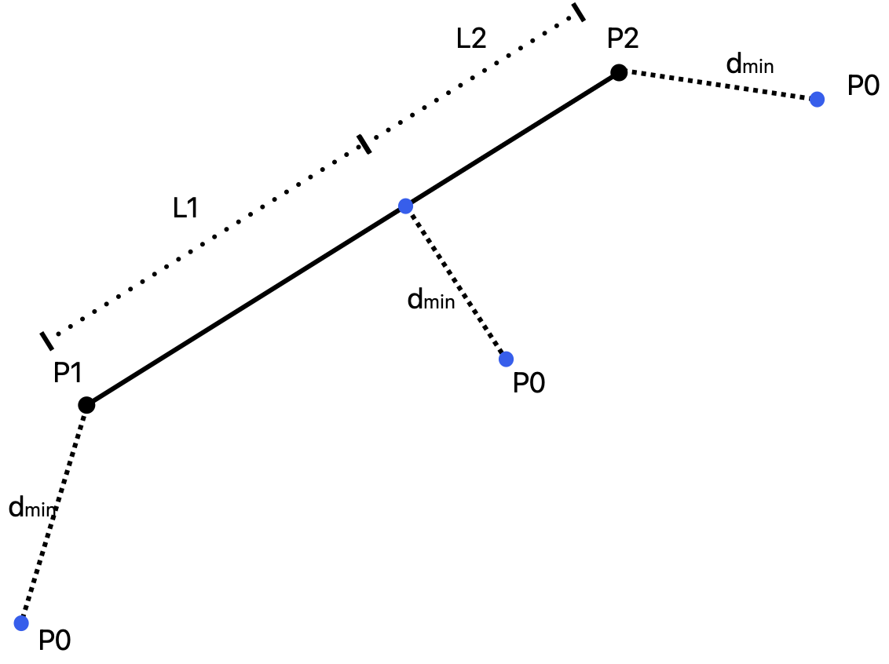

AMworkflow#
Dev on Documentation#
Prerequisite:
Sphinx,sphinx-autobuild,sphinx-rtd-theme,sphinxcontrib-applehelp,sphinxcontrib-devhelp,sphinxcontrib-htmlhelp,sphinxcontrib-jquery,sphinxcontrib-jsmath,sphinxcontrib-qthelp,sphinxcontrib-serializinghtml.How does it work? Use the command:
sphinx-autobuild . _build/html
The server should be ready on Localhost Port 8000 and it auto builds when changes made.
Introduction#
Some Intro
Project Organization#
.
├── config
│ └── settings.py
├── dependencies
│ └── OCCUtils-0.1.dev0-py3-none-any.whl
├── gcode
│ ├── config
│ │ ├── ConcretePrinter.yaml
│ │ ├── ConcretePrinter_BAM.yaml
│ │ ├── PowderBedBAM.yaml
│ │ ├── RS-274D_config.ini
│ │ └── RepRap.yaml
│ ├── gcode.py
│ └── printer_config.py
├── geometry
│ ├── builtinCAD.py
│ └── geometry.py
├── meshing
│ └── meshing.py
├── occ_helpers.py
└── simulation
├── experiment.py
├── simulation.py
└── tests
BuiltinCAD#
Shortest_distance_point_line

The function returns the shortest distance between a point and a line (segment). For example in figure above the result will be \((\frac{L_1}{L_1+L_2},d_{min})\).
- amworkflow.geometry.builtinCAD.shortest_distance_point_line(line: list | Segment | ndarray, p: list | Segment | ndarray)[source]#
Calculate the shortest distance between a point and a line (segment).
- Parameters:
line (Union[list, Segment, np.ndarray]) – The line (segment) to be examined.
p (Union[list, Segment, np.ndarray]) – The point to be examined.
- Returns:
The relative coordinate of the point on the line (segment) and The shortest distance between the point and the line (segment).
- Return type:
Tuple[Union[int, float], float]
- class amworkflow.geometry.builtinCAD.DuplicationCheck(gtype: int, gvalue: any)[source]#
Check if an item already exists in the index.
- check_type_coincide(base_type: int, item_type: int) bool[source]#
Check if items has the same type with the base item.
- Parameters:
base_type (int) – The type referred
item_type (int) – The type to be examined
- Returns:
True if coincident.
- Return type:
bool
- check_type_validity(item_type: int) bool[source]#
Check if given type if valid
- Parameters:
item_type (int) – The type to be examined
- Raises:
ValueError – Wrong geometry object type, perhaps a mistake made in development.
- Returns:
True if valid
- Return type:
bool
- class amworkflow.geometry.builtinCAD.Pnt(coord: list = [], loading_state=None)[source]#
Create a point.
- amworkflow.geometry.builtinCAD.angle_of_two_arrays(a1: ndarray, a2: ndarray, rad: bool = True) float[source]#
@brief Returns the angle between two vectors. This is useful for calculating the rotation angle between a vector and another vector @param a1 1D array of shape ( n_features ) @param a2 2D array of shape ( n_features ) @param rad If True the angle is in radians otherwise in degrees @return Angle between a1 and a2 in degrees or radians depending on rad = True or False
- amworkflow.geometry.builtinCAD.bisect_angle(a1: ndarray | Segment, a2: ndarray | Segment) ndarray[source]#
@brief Angular bisector between two vectors. The result is a vector splitting the angle between two vectors uniformly. @param a1 1xN numpy array @param a2 1xN numpy array @return the bisector vector
- amworkflow.geometry.builtinCAD.find_intersect_node_on_edge(line1: Segment, line2: Segment, update_property: dict | None = None) tuple[source]#
Find possible intersect node on two lines
- Parameters:
line1 (Union[np.ndarray, Segment]) – The first line
line2 (Union[np.ndarray, Segment]) – The second line
update_property (dict, optional) – The property to update, defaults to None
- Returns:
The possible intersect node on the two lines
- Return type:
tuple
- amworkflow.geometry.builtinCAD.get_from_source(oid: int | None = None, it_value: list | None = None, obj_type: str | None = None, target: str = 'object')[source]#
A wrapper function to get the object from the source. if oid is not specified, it_value or obj_type will be used. If none of them is specified, all objects will be returned.
Notice: In case of stack overflow, when return all objects or all in one type, the function will return a generator.
- Parameters:
oid (int) – The id of the object to be retrieved.
it_value (list) – The value of the object to be retrieved.
obj_type (str) – The type of the object to be retrieved.
target (str) – The target of the retrieval, either “object” or “property”.
- Returns:
The object retrieved.
- Return type:
any
- amworkflow.geometry.builtinCAD.get_literal_vector(a: ndarray, d: bool)[source]#
@brief This is used to create a vector which is perpendicular to the based vector on its left side ( d = True ) or right side ( d = False ) @param a vector ( a ) @param d True if on left or False if on right @return A vector.
- amworkflow.geometry.builtinCAD.get_random_line(xmin, xmax, ymin, ymax, zmin=0, zmax=0)[source]#
Get a random line within the specified range
- Parameters:
xmin (int) – The minimum value of x
xmax (int) – The maximum value of x
ymin (int) – The minimum value of y
ymax (int) – The maximum value of y
zmin (int, optional) – The minimum value of z, defaults to 0
zmax (int, optional) – The maximum value of z, defaults to 0
- Returns:
The random line
- Return type:
np.ndarray
- amworkflow.geometry.builtinCAD.get_random_pnt(xmin, xmax, ymin, ymax, zmin=0, zmax=0, numpy_array=True) Pnt | ndarray[source]#
Get a random point within the specified range
- Parameters:
xmin (int) – The minimum value of x
xmax (int) – The maximum value of x
ymin (int) – The minimum value of y
ymax (int) – The maximum value of y
zmin (int, optional) – The minimum value of z, defaults to 0
zmax (int, optional) – The maximum value of z, defaults to 0
numpy_array (bool, optional) – If True, return a numpy array, otherwise return a Pnt object, defaults to True
- Returns:
The random point
- Return type:
Union[Pnt, np.ndarray]
- amworkflow.geometry.builtinCAD.p_rotate(pts: ndarray, angle_x: float = 0, angle_y: float = 0, angle_z: float = 0, cnt: ndarray | None = None) ndarray[source]#
Rotate points around a center point
- Parameters:
pts (np.ndarray) – The points to be rotated
angle_x (float, optional) – The angle to rotate around x-axis, defaults to 0
angle_y (float, optional) – The angle to rotate around y-axis, defaults to 0
angle_z (float, optional) – The angle to rotate around z-axis, defaults to 0
cnt (np.ndarray, optional) – The center point to rotate around, defaults to None
- Returns:
The rotated points
- Return type:
np.ndarray
- amworkflow.geometry.builtinCAD.pnt(pt_coord) ndarray[source]#
Create a point. :param pt_coord: The coordinate of the point. If the dimension is less than 3, the rest will be padded with 0. If the dimension is more than 3, an exception will be raised. :type pt_coord: list :return: The coordinate of the point. :rtype: np.ndarray
- amworkflow.geometry.builtinCAD.project_array(array: ndarray, direct: ndarray) ndarray[source]#
Project an array to the specified direction.
- amworkflow.geometry.builtinCAD.read_from_csv(file_path: str, delimiter: str = ',') list[source]#
Read data from a csv file
- Parameters:
file_path (str) – The path of the csv file
delimiter (str, optional) – The delimiter of the csv file, defaults to “,”
- Returns:
The data read from the csv file
- Return type:
list
- amworkflow.geometry.builtinCAD.send_to_source(obj: TopoObj, obj_property: dict)[source]#
A wrapper function to send the object to the source.
- Parameters:
obj (TopoObj) – The object to be sent.
obj_property (dict) – The property of the object to be sent.
- amworkflow.geometry.builtinCAD.update_source(obj: TopoObj, obj_property: dict | None = None)[source]#
A wrapper function to update the source of the object. :param obj: The object to be updated. :type obj: TopoObj :param obj_property: The property of the object to be updated. :type obj_property: dict
Gcode#
- class amworkflow.gcode.gcode.Gcode(*args, **kwargs)[source]#
Base class with API for any gcode writer.
- class amworkflow.gcode.gcode.GcodeFromPoints(layer_num: float = 1, layer_height: float = 1, line_width: float = 1, offset_from_origin: ndarray | bool | None = None, unit: str = 'mm', standard: str = 'ConcretePrinter', coordinate_system: str = 'absolute', nozzle_diameter: float = 0.4, kappa: float = 1, gamma: float = -1, delta: float = 1, tool_number: int = 0, feedrate: int = 1800, fixed_feedrate: bool = False, pumpspeed: float | None = None, rotate: bool = False, density: float = 1, ramp: bool = False, **kwargs)[source]#
Gcode writer from path points.
- compute_extrusion(p0: list, p1: list)[source]#
Compute the extrusion length. rectify the extrusion length by the kappa factor.
- Parameters:
p0 (list) – The previous point
p1 (list) – The current point
- Returns:
The extrusion length
- Return type:
float
- create(in_file: Path, out_gcode: Path | None = None) None[source]#
Create gcode file by given path point file plus additional log_file
- Parameters:
in_file – File path to path point file
out_gcode – File path to gcode file.
Returns:
- elevate(z: float, f: float | None = None)[source]#
Elevate to a height
- Parameters:
z (float) – z coordinate
f (float, optional) – feed rate, defaults to None
- Returns:
string of gcode command
- Return type:
str
- move(p: list, e: float | bool | None = None, f: float | bool | None = None, s: float | bool | None = None)[source]#
Move to a point in XY or XYZ plane
- read_points(csv_file: str)[source]#
Read points from file x and y is mandatory, z coordination optional
- Parameters:
filepath – Path to file
- Returns:
List of points
- Return type:
points
- set_coordinate_system()[source]#
Set coordinate system
- Raises:
ValueError – Value error
- Returns:
string of gcode command
- Return type:
str
- set_fanspeed(speed)[source]#
Set fan speed :param speed: fan speed :type speed: float :return: string of gcode command :rtype: str
- set_temperature(temperature)[source]#
Set temperature
- Parameters:
temperature (float) – temperature
- Returns:
string of gcode command
- Return type:
str
- set_tool(tool_number)[source]#
set tool
- Parameters:
tool_number (int) – tool number
- Returns:
string of gcode command
- Return type:
str
- class amworkflow.gcode.gcode.PowderbedCodeFromSTL(standard: str = 'PowderBedBAM', in_file_path: str | None = None, stl_unit: float = 1, debug_mode: bool = False, add_zeros: int = 0, **kwargs)[source]#
Print instructions writer from stl file
- create(in_file: Path, out_dsmn: Path, out_xyz: Path, out_dsmn_dir: Path | None = None) None[source]#
Create dsmn printer instructions file by given stl file
- Parameters:
in_file – File path to path point file
out_dsmn – Name of output dsmn file.
out_xyz – Name of output xyz file.
out_dsmn_dir – Directory of output dsmn file. If not given, One output folder will be created in the root directory of the project.
Returns:
Geometry#
- class amworkflow.geometry.geometry.Geometry(*args, **kwargs)[source]#
Base class with API for any geometry creation.
- create(out_step: Path, out_path: Path, out_stl: Path | None = None) None[source]#
Create step and stl file from the geometry.
To be defined in child classes.
- Parameters:
out_step – File path of step file.
out_path – File path of file containing the print path points (csv).
out_path – File path of file containing the print path points (csv).
out_stl – Optional file path of stl file.
Returns:
- class amworkflow.geometry.geometry.GeometryCenterline(points: ndarray | None = None, layer_thickness: float | None = None, height: float | None = None, is_close: bool = True, **kwargs)[source]#
- class amworkflow.geometry.geometry.GeometryOCC(stl_linear_deflection: float = 0.001, stl_angular_deflection: float = 0.1, **kwargs)[source]#
Geometry base class for OCC geometry creation.
- create(out_step: Path, out_path: Path, out_stl: Path | None = None) None[source]#
Create step and stl file from OCC shape geometry created by function geometry_spawn.
- Parameters:
out_step – File path of step file.
out_path – File path of file containing the print path points.
out_stl – File path of stl file.
Returns:
- class amworkflow.geometry.geometry.GeometryParamWall(height: float | None = None, length: float | None = None, width: float | None = None, line_width: float | None = None, radius: float | None = None, infill: Literal['solid', 'honeycomb', 'zigzag'] | None = None, infill_num: int = 1, layer_thickness: float | None = None, **kwargs)[source]#
- geometry_spawn() TopoDS_Shape[source]#
Define wall geometry based on given parameters.
Args:
- Returns:
OCC shape.
- Return type:
shape
- honeycomb_infill(overall_length: float, overall_width: float, line_width: float, honeycomb_num: int = 1, angle: float = 1.1468, regular: bool = False, side_len: float | None = None, expand_factor: float = 0)[source]#
Create honeycomb geometry.
- Parameters:
overall_length – Length of the honeycomb infill.
overall_width – Width of the honeycomb infill.
line_width – Width of the honeycomb lines.
honeycomb_num – Number of honeycomb units.
angle – Angle of the honeycomb lines.
regular – Regular honeycomb or not. A regular honeycomb has a fixed side length.
side_len – Side length of the honeycomb.
expand_factor – Factor to expand the honeycomb geometry.
- Returns:
Array of points defining the honeycomb geometry.
- Return type:
np.ndarray
- zigzag_infill(overall_length: float, overall_width: float, line_width: float, zigzag_num: int = 1, angle: float = 1.1468, regular: bool = False, side_len: float | None = None, expand_factor: float = 0)[source]#
Create zigzag geometry.
- Parameters:
overall_length – Length of the zigzag infill.
overall_width – Width of the zigzag infill.
line_width – Width of the zigzag lines.
zigzag_num – Number of zigzag units.
angle – Angle of the zigzag lines.
regular – Regular zigzag or not. A regular zigzag is equivalent to a diamond.
side_len – Side length of the zigzag.
expand_factor – Factor to expand the zigzag geometry.
- Returns:
Array of points defining the zigzag geometry.
- Return type:
np.ndarray
Meshing#
- class amworkflow.meshing.meshing.Meshing(*args, **kwargs)[source]#
Base class with API for any meshing.
- create(step_file: Path, out_xdmf: Path, out_vtk: Path | None = None) None[source]#
Create mesh xdmf file and possibly vtk file from input step file.
- Parameters:
step_file – File path to input geometry step file.
out_xdmf – File path of output xdmf file (maybe others if other mesh engine).
out_vtk – Optional file path of output vtk file.
Returns:
- class amworkflow.meshing.meshing.MeshingGmsh(mesh_size_factor: float = 0.1, layer_height: float | None = None, number_of_layers: float | None = None, **kwargs)[source]#
- create(step_file: Path, out_xdmf: Path, out_vtk: Path | None = None) None[source]#
Create mesh xdmf file and possibly vtk file from input step file.
- Parameters:
step_file – File path to input geometry step file.
out_xdmf – File path of output xdmf file.
out_vtk – Optional file path of output vtk file.
Returns:
- create_mesh(mesh, cell_type: str, prune_z: bool = False) Mesh[source]#
- Convert meshio mesh to fenics compatible mesh.
based on https://jsdokken.com/dolfinx-tutorial/chapter3/subdomains.html?highlight=read_mesh
- Parameters:
mesh – Mesh read by meshio from msh file (meshio.read(file_msh)).
cell_type – Type of cell to be meshed (e.g. ‘tetra’,’triangle’ …).
prune_z – True for 2D meshes - removes z coordinate.
- Returns:
Mesh which can be saved as xdmf file. (meshio.write(file_xdmf, out_mesh))
- Return type:
out_mesh
OCC Helpers#
- amworkflow.occ_helpers.carve_hollow(face: TopoDS_Shape, factor: float) TopoDS_Shape[source]#
Carve a hollow in a face by scaling it down from itself.
- Parameters:
face (TopoDS_Shape) – The face to carve.
factor (float) – The scaling factor.
- Returns:
The carved shape.
- Return type:
TopoDS_Shape
- amworkflow.occ_helpers.common(shape1: TopoDS_Shape, shape2: TopoDS_Shape) TopoDS_Shape[source]#
Find the common volume between two shapes.
- Parameters:
shape1 (TopoDS_Shape) – The first shape.
shape2 (TopoDS_Shape) – The second shape.
- Returns:
The common shape.
- Return type:
TopoDS_Shape
- amworkflow.occ_helpers.create_box(length: float, width: float, height: float, radius: float | None = None, alpha: float | None = None, shell: bool = False) TopoDS_Shape[source]#
Create a box with given length, width, height, and radius. If radius is None or 0, the box will be sewed by a solid.
- Parameters:
length (float) – Length of the box.
width (float) – Width of the box.
height (float) – Height of the box.
radius (float) – Radius of the box. Default is None, which means that the box is without curves.
alpha (float) – Angle for bending the box. Default is half the length divided by the radius.
shell (bool) – If True, the box will be a shell. Default is False.
- Returns:
The created box in TopoDS_Shape form.
- Return type:
TopoDS_Shape
- amworkflow.occ_helpers.create_compound(*args) TopoDS_Compound[source]#
Create a compound from multiple shapes.
- Parameters:
args – The shapes to combine into a compound.
- Returns:
The created compound.
- Return type:
TopoDS_Compound
- amworkflow.occ_helpers.create_edge(pnt1: gp_Pnt | None = None, pnt2: gp_Pnt | None = None, arch: Geom_TrimmedCurve | None = None) TopoDS_Edge[source]#
Create an edge between two points or from an arc.
- Parameters:
pnt1 (gp_Pnt) – First point of the edge.
pnt2 (gp_Pnt) – Second point of the edge.
arch (Geom_TrimmedCurve) – Arc curve to create the edge from. If None, the edge will be created from pnt1 and pnt2.
- Returns:
The created edge.
- Return type:
TopoDS_Edge
- amworkflow.occ_helpers.create_face(wire: TopoDS_Wire) TopoDS_Face[source]#
Create a BRep face from a TopoDS_Wire.
- Parameters:
wire (TopoDS_Wire) – The wire to create a face from.
- Returns:
A face created from the given wire.
- Return type:
TopoDS_Face
- amworkflow.occ_helpers.create_polygon(points: list, isface: bool = True) TopoDS_Face[source]#
Create a polygon from a list of points.
- Parameters:
points (list) – The list of points defining the polygon.
isface (bool) – If True, the polygon will be face-oriented; otherwise, it will be a wire.
- Returns:
The created polygon.
- Return type:
TopoDS_Face or TopoDS_Wire
- amworkflow.occ_helpers.create_prism(shape: TopoDS_Shape, vector: list, copy: bool = True) TopoDS_Shell[source]#
Create a prism from a TopoDS_Shape and vector.
- Parameters:
shape (TopoDS_Shape) – The shape to be used as the base.
vector (list) – A list of 3 elements (x, y, z). Normally only z is used to define the height of the prism.
copy (bool) – If True, the base wire(s) will be copied. Recommended to always use True.
- Returns:
The created prism.
- Return type:
TopoDS_Shell
- amworkflow.occ_helpers.create_solid(item: TopoDS_Shape) TopoDS_Shape[source]#
Create a solid from a TopoDS_Shape.
- Parameters:
item (TopoDS_Shape) – The shape to convert to a solid.
- Returns:
The created solid.
- Return type:
TopoDS_Shape
- amworkflow.occ_helpers.create_wire(*edge) TopoDS_Wire[source]#
Create a wire from the given edge(s).
- Parameters:
edge – One or more edges to build a wire.
- Returns:
A wire built from the given edge(s).
- Return type:
TopoDS_Wire
- amworkflow.occ_helpers.create_wire_by_points(points: list) TopoDS_Wire[source]#
Create a closed wire (loop) from a list of points.
- Parameters:
points (list) – The list of points defining the wire.
- Returns:
The created wire.
- Return type:
TopoDS_Wire
- amworkflow.occ_helpers.cut(shape1: TopoDS_Shape, shape2: TopoDS_Shape) TopoDS_Shape[source]#
Cut one shape from another.
- Parameters:
shape1 (TopoDS_Shape) – The shape to cut from.
shape2 (TopoDS_Shape) – The shape to cut with.
- Returns:
The cut shape.
- Return type:
TopoDS_Shape
- amworkflow.occ_helpers.explore_topo(shape: TopoDS_Shape, shape_type: str) list[source]#
Explore a shape and return a list of sub-shapes of a specified type.
- Parameters:
shape (TopoDS_Shape) – The shape to explore.
shape_type (str) – The type of sub-shapes to retrieve (e.g., “wire”, “face”, “shell”, “solid”, “compound”, “edge”).
- Returns:
A list of sub-shapes.
- Return type:
list
- amworkflow.occ_helpers.fuse(shape1: TopoDS_Shape, shape2: TopoDS_Shape) TopoDS_Shape[source]#
Fuse two shapes into one.
- Parameters:
shape1 (TopoDS_Shape) – The first shape to fuse.
shape2 (TopoDS_Shape) – The second shape to fuse.
- Returns:
The fused shape.
- Return type:
TopoDS_Shape
- amworkflow.occ_helpers.geom_copy(item: TopoDS_Shape) TopoDS_Shape[source]#
Copy a shape.
- Parameters:
item (TopoDS_Shape) – The shape to copy.
- Returns:
The copied shape.
- Return type:
TopoDS_Shape
- amworkflow.occ_helpers.get_boundary(item: TopoDS_Shape) TopoDS_Wire[source]#
Get the boundary edges of a shape.
- Parameters:
item (TopoDS_Shape) – The shape to get the boundary for.
- Returns:
The boundary wire.
- Return type:
TopoDS_Wire
- amworkflow.occ_helpers.get_face_area(face: TopoDS_Face) float[source]#
Get the area of a face.
- Parameters:
face (TopoDS_Face) – The face to get the area for.
- Returns:
The area of the face.
- Return type:
float
- amworkflow.occ_helpers.get_face_center_of_mass(face: TopoDS_Face, gp_pnt: bool = False)[source]#
Get the center of mass of a face.
- Parameters:
face (TopoDS_Face) – The face to get the center of mass for.
gp_pnt (bool) – If True, return a gp_Pnt object; otherwise, return a tuple of coordinates.
- Returns:
The center of mass.
- Return type:
gp_Pnt or tuple
- amworkflow.occ_helpers.get_faces(_shape)[source]#
Get the faces of a shape.
- Parameters:
_shape (TopoDS_Shape) – The shape to get the faces for.
- Returns:
A list of faces.
- Return type:
list
- amworkflow.occ_helpers.get_occ_bounding_box(shape: TopoDS_Shape) tuple[source]#
Get the bounding box of a shape.
- Parameters:
shape (TopoDS_Shape) – The shape to get the bounding box for.
- Returns:
A tuple containing (xmin, ymin, zmin, xmax, ymax, zmax).
- Return type:
tuple
- amworkflow.occ_helpers.get_volume_center_of_mass(vol: TopoDS_Solid, gp_pnt: bool = False)[source]#
Get the center of mass of a volume.
- Parameters:
vol (TopoDS_Solid) – The volume to get the center of mass for.
gp_pnt (bool) – If True, return a gp_Pnt object; otherwise, return a tuple of coordinates.
- Returns:
The center of mass.
- Return type:
gp_Pnt or tuple
- amworkflow.occ_helpers.intersect(item: TopoDS_Shape, position: float, axis: str) TopoDS_Shape[source]#
Intersect a shape with a plane at a given position.
- Parameters:
item (TopoDS_Shape) – The shape to intersect.
position (float) – The position of the plane in world coordinates.
axis (str) – The axis along which the intersection is made.
- Returns:
The intersected shape.
- Return type:
TopoDS_Shape
- amworkflow.occ_helpers.reverse(item: TopoDS_Shape) TopoDS_Shape[source]#
Reverse a shape.
- Parameters:
item (TopoDS_Shape) – The shape to reverse.
- Returns:
The reversed shape.
- Return type:
TopoDS_Shape
- amworkflow.occ_helpers.rotate_face(shape: TopoDS_Shape, angle: float, axis: str = 'z', cnt: tuple | None = None) TopoDS_Shape[source]#
Rotate a shape around its center of mass by a given angle.
- Parameters:
shape (TopoDS_Shape) – The shape to rotate.
angle (float) – The angle to rotate by (in degrees).
axis (str) – The axis to rotate around (default is “z”).
cnt (tuple) – The center of rotation. If None, the center of mass is used.
- Returns:
The rotated shape.
- Return type:
TopoDS_Shape
- amworkflow.occ_helpers.scale(item: TopoDS_Shape, cnt_pnt: gp_Pnt, factor: float) TopoDS_Shape[source]#
Scale a shape by a given factor.
- Parameters:
item (TopoDS_Shape) – The shape to scale.
cnt_pnt (gp_Pnt) – The center point for scaling.
factor (float) – The scaling factor.
- Returns:
The scaled shape.
- Return type:
TopoDS_Shape
- amworkflow.occ_helpers.sew_face(*component) TopoDS_Shape[source]#
Sew multiple faces into a single shape.
- Parameters:
component – A list of faces to sew.
- Returns:
The sewed shape.
- Return type:
TopoDS_Shape
- amworkflow.occ_helpers.split(item: TopoDS_Shape, *tools: TopoDS_Shape) TopoDS_Compound[source]#
Split a shape using one or more tools.
- Parameters:
item (TopoDS_Shape) – The shape to split.
tools (TopoDS_Shape) – The tools to split the shape with.
- Returns:
The resulting compound shape after splitting.
- Return type:
TopoDS_Compound
- amworkflow.occ_helpers.split_by_plane(item: TopoDS_Shape, nz: int | None = None, layer_height: float | None = None, nx: int | None = None, ny: int | None = None) TopoDS_Compound[source]#
Split a shape into sub-shapes by planes.
- Parameters:
item (TopoDS_Shape) – The shape to split.
nz (int) – Number of layers in z-direction to split.
layer_height (float) – Height of each layer.
nx (int) – Number of sub-shapes in the x-direction.
ny (int) – Number of sub-shapes in the y-direction.
- Returns:
A compound of sub-shapes.
- Return type:
TopoDS_Compound